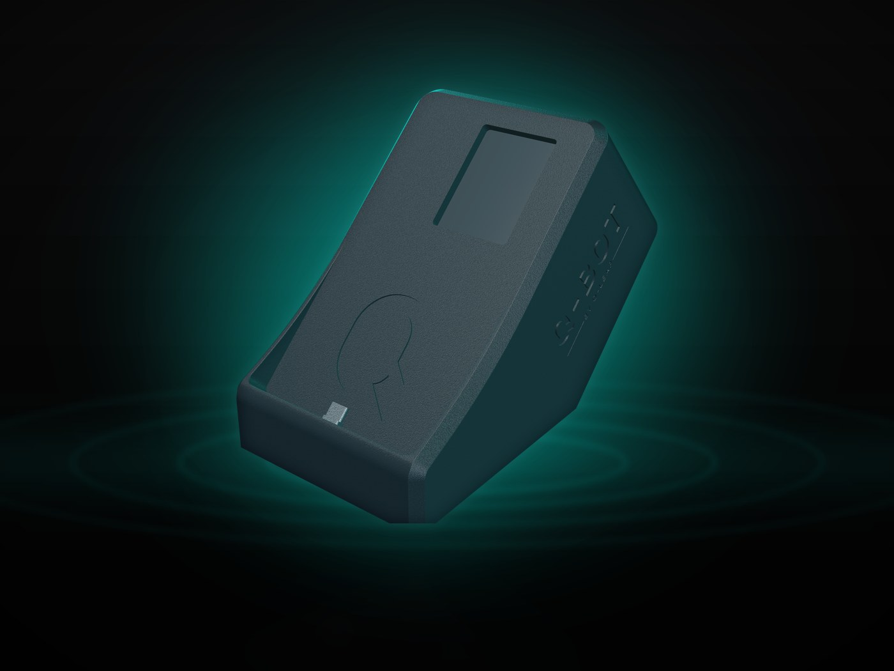
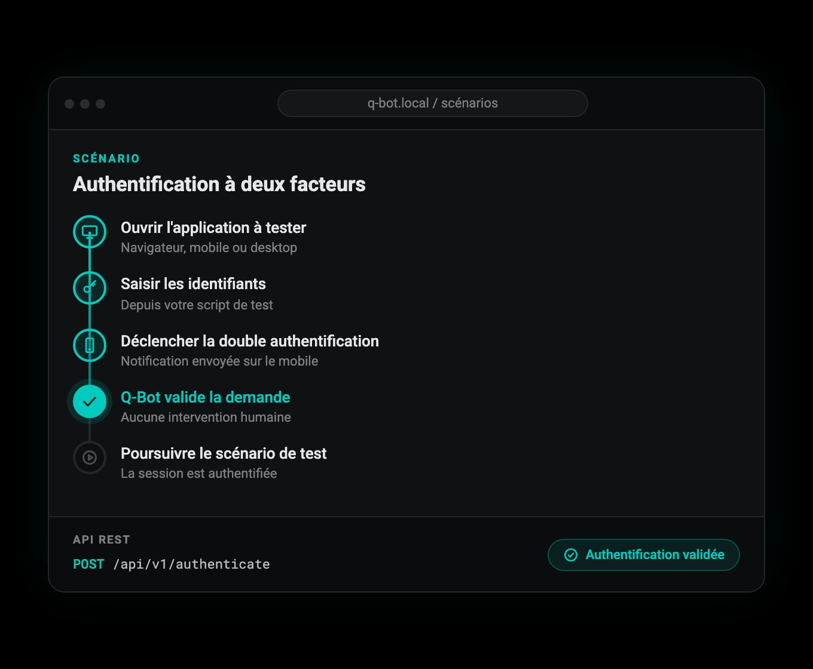

Photos supprimées
Les captures d'écran sont immédiatement supprimées après extraction du code OTP. Aucune image n'est conservée.
Q-Bot, fruit d'une innovation alliant électronique, logiciel et design, automatise la double authentification LuxTrust au Luxembourg ainsi que d'autres systèmes à l'international. Pensé par des testeurs pour des testeurs, il incarne l'expertise de Q-Leap, experts en testing depuis plus de 10 ans.
Q-Bot est conçu sur demande, avec une taille compacte tenant dans un espace équivalent à une feuille A3 (29,7 x 42 cm). Tous les modules, y compris les tablettes, sont intégrés dans ce format optimisé pour s'adapter parfaitement à l'environnement de travail des testeurs, sans encombrer leur bureau.
Un ordinateur miniature, aussi compact qu'une carte de crédit, dont voici les caractéristiques techniques :
Q-Bot dispose d'une application web indépendante pour la création de scénario basés sur les écrans de l'app mobile pour un positionnement parfait. Aucune compétence technique n'est nécessaire.

Explorer le modèle 3D interactifQ-Bot offre deux modes d'utilisation complémentaires pour s'adapter à tous les workflows de test.

Q-Bot est conçu pour respecter la confidentialité et la sécurité de vos données de test.
Les captures d'écran sont immédiatement supprimées après extraction du code OTP. Aucune image n'est conservée.
Q-Bot doit être utilisé avec des données de test, non de production. Les scénarios créés restent sur l'appareil.
Q-Bot fonctionne sur votre réseau interne. La communication entre Q-Bot et vos outils de test reste locale.
En cas de dysfonctionnement, le support Q-Leap peut intervenir à distance. Si non résolvable, remplacement du robot.
Q-Bot s'intègre dans votre workflow existant, quelle que soit la technologie utilisée.